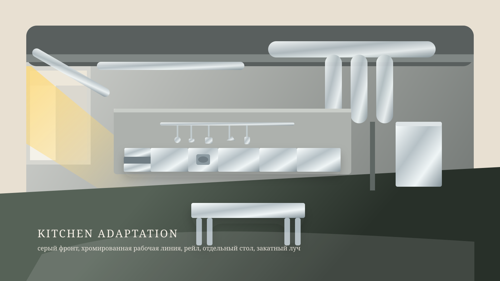

01
Kitchen
Индустриальная кухня с хромированной рабочей линией, закатным светом и холодной функциональностью.
Taste of Blood
Рабочая презентация по трем локациям проекта «Вкус крови»: кухне, моргу и основному залу вампиров. Задача страницы — быстро показать исходные пространства, будущий редрессинг и атмосферу для согласования с командой.
Что нужно от страницы
Overview
По встрече от 3 июня 2026 года это не просто подбор площадок, а черновая production design-презентация: наглядно показываем, как локации могут выглядеть после вмешательства художки.
01
Индустриальная кухня с хромированной рабочей линией, закатным светом и холодной функциональностью.
02
Светлое стерильное пространство с клинической пустотой и подчеркнутой симметрией.
03
Главный зал с тяжелым столом, скамьями, хромом, стеклом и сумрачной ритуальной атмосферой.
Location 01
Базовая индустриальная площадка под съемку всей истории с едой. Главное — не убить заводской скелет пространства, а встроить в него длинную хромированную рабочую кухню.

Location 01 Kitchen
По транскрибации первая кухня должна остаться в текущей серо-зеленой индустриальной гамме, но стать чистой и хирургически собранной: цветной задник перекрывается серой стеной, слева исчезает мусор, справа уходит черная тряпка, а вдоль дальней стены выстраивается сплошная хромированная линия из столов, плиты, мойки и холодильника.
Над рабочей линией висит длинный рейл с редкими половниками и ножами, в центре ближе к камере появляется отдельный хромированный рабочий стол, а из окна слева в комнату входит закатный теплый луч.

Location 02
Самая чистая по базе площадка. Важнее всего подчеркнуть стерильность, арочную симметрию и тревожную пустоту, а не перегрузить ее деталями.
Location 03
Это не гостиная в бытовом смысле, а основной зал вампиров: место общего плана, стола, композиции как у темной трапезы и атмосферы скромного, но вычурного богатства.


{kind=link}
{kind=link}
{kind=link}
{kind=link}
{kind=link}
{kind=link}
{kind=link}
{kind=link}
{kind=link}
{kind=link}
{kind=link}
{kind=link}
{kind=link}
{kind=link}
{kind=link}
{kind=link}